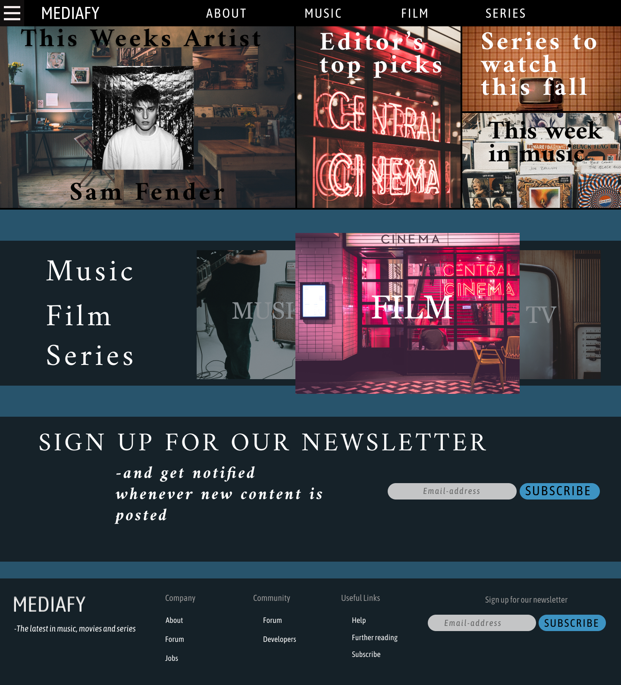
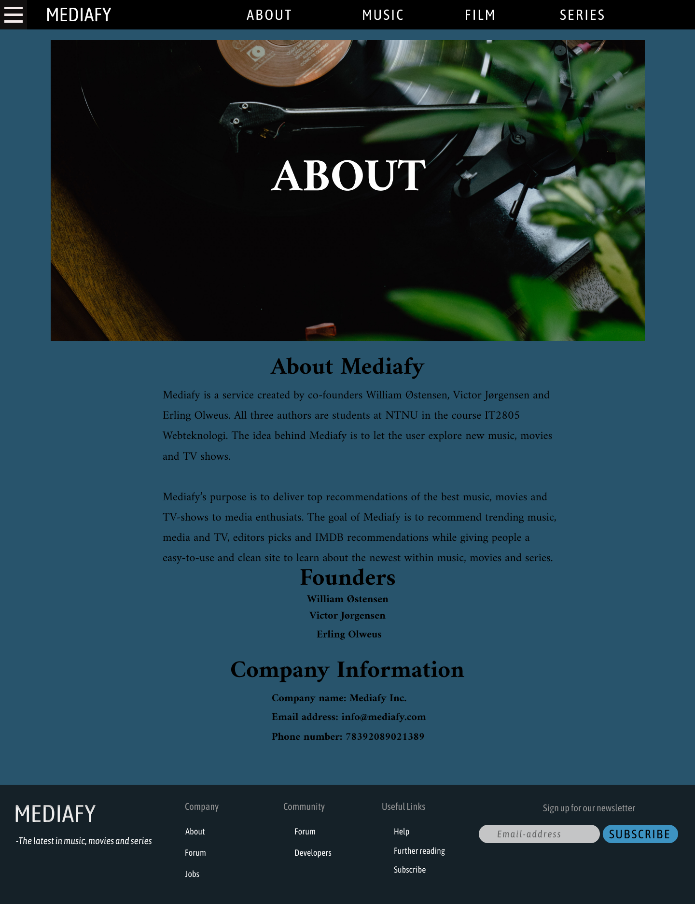
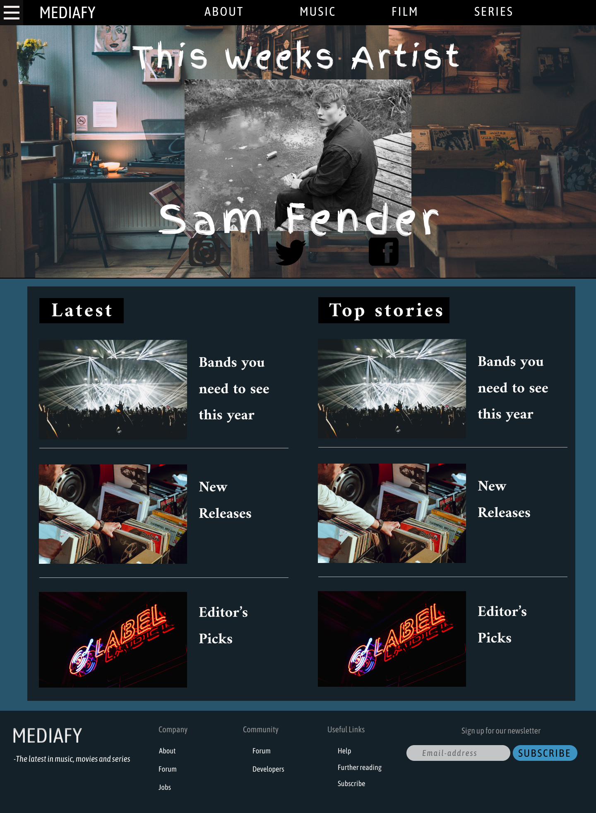
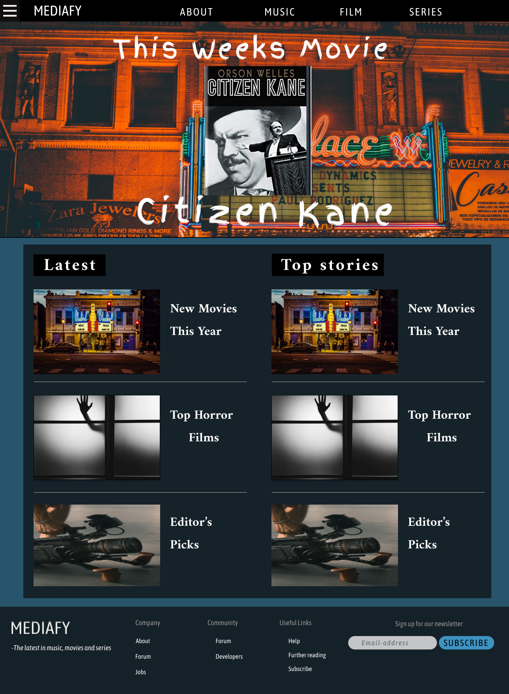
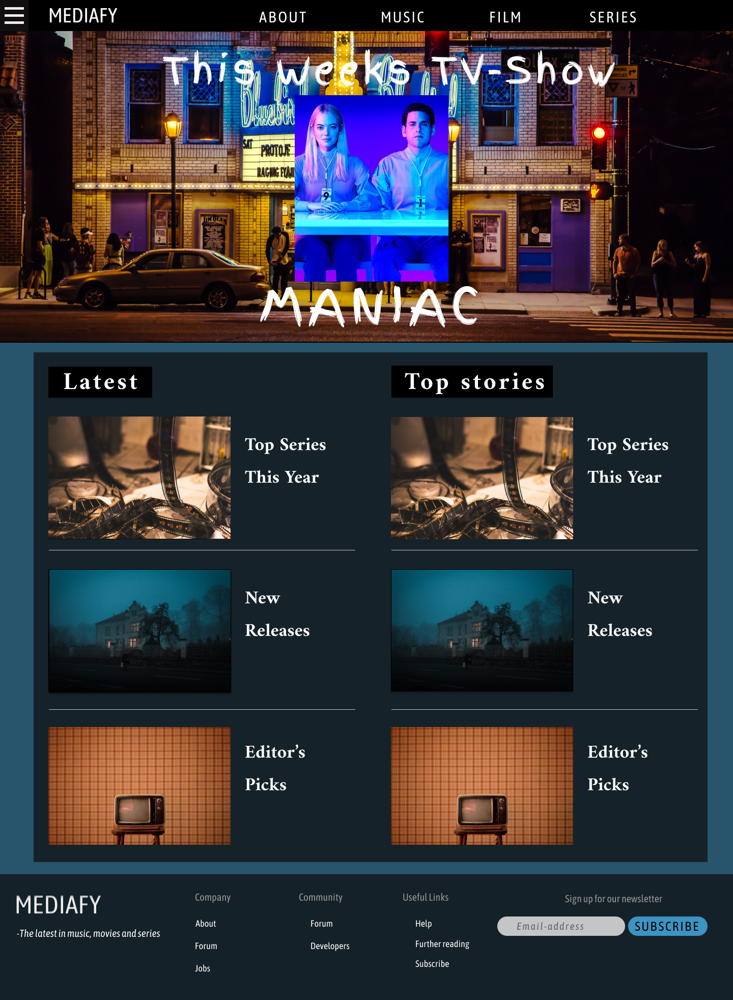
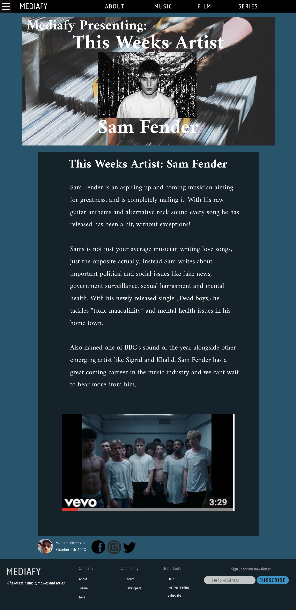

Content
1. The front page - index.html
The front page, index.html, will be the first page to appear when visiting the website. The front page will link to several subpages, but not all of them. On the top of the page there will be clickable images to editors pick, this weeks artist, series to watch this fall and this week in music. A javascript application to randomize picks will make sure that different articles will be shown. In the center we will have a slider through all three categories of the page; music, film and series. We are planning on using a javascript application for this slider. At the bottom of the front page, and also at the bottom of every subpage, we will have a footer with a subscription button to our newsletter, and general information, pseudo links to forum, jobs, help, etc. To avoid repetition will will not describe the footer in every page.
2. About - about.html
The about page will give a short presentation about what Mediafy is, who Mediafy is run by, and what our purpose and goals is. This page will also display our contact information, and a short introduction of who the the founders are. The about page will help us reach our goal of
3. Music - music.html
This will be the main page for music containing the different articles within this topic
4. Movies - movies.html
This will be the main page for movies containing the different articles within this topic
5. Series - series.html
This will be the main page for series containing the different articles within this topic
Articles
6. Music Article 1(This weeks artist) - musicarticle1.html
This will be one out of three music articles. This is a draft of what an articles will look like regarding design and content

The next article pages will follow this template described in the layout section. We will start out with 3 articles within each topic.
We only have drafts/ideas of what these articles will contain so these topics are not final, but will be written in project 3. In short these articles will be about things like «This weeks <"artist, movie, series">» and Editors Picks. Every article will look almost the same as the one above and the template, only differeing in the picture and content.
- 6. Music Article 1 (This weeks artist) - musicarticle1.html (displayed above)
- 7. Music Article 2 (Editors Picks) - musicarticle2.html
- 8. Music Article 3 (Bands you need to see live) - musicarticle3.html
- 9. Movie Article 1 (This weeks movie) - moviearticle1.html
- 10. Movie Article 2 (Editors Picks) - moviearticle2.html
- 11. Movie Article 3 (Horror movies you dont want to see alone)- moviearticle3.html
- 12. Serie Article 1 (This weeks series) - seriearticle1.html
- 13. Serie Article 2 (Editors Picks) - seriearticle2.html
- 14. Serie Article 3 (Series to watch this fall) - seriearticle3.html